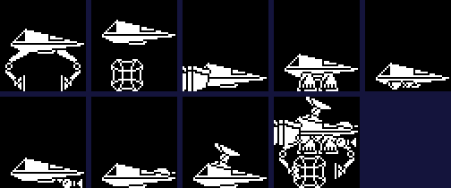

| The ship: movement, physics and add-ons |
The ship never moves on the screen. Steering and thrust become this pass's scroll, 2 or 4 pixels, and the world moves the other way. Its picture is rebuilt in RAM from the add-ons it carries whenever one is fitted.
ship_record is 32 bytes in the objects' layout (see the objects), reset each life from ship_record_start. Because the ship stays put on the screen, its world position is the view's: +1 to +3 the map column and x in the page, +4 to +6 the row and y; ship_facing its facing (bit 7 left); ship_across_speed and ship_down_speed its two speeds, 8.8 numbers high byte first, in units of 2 pixels a pass; ship_screen_x and ship_screen_y its place on the screen; part_being_fitted an add-on or rocket part being fitted. The byte after it, ore, is the ore aboard.
ship_pass counts the pass, saves a restart point every fourth, and unless the ship is dying calls move_ship: read_controls reads the controls (and burns fuel), the speed across goes through accelerate_across and speed_to_scroll into scroll_across, and the climb through clamp_climb and climb_fraction into scroll_down. Then the record is moved against the scroll (ship_speed_from_scroll), tested against the landscape (collide_with_landscape, see collision) and the ground objects (ship_hits_ground_objects), and the landscape scrolls.
Read from the game, in 256ths of a speed unit a pass (a unit being 2 pixels a pass):
| Label | Value | Units a pass | What |
|---|---|---|---|
| gravity | -$40 | -0.2500 | added to the climb speed each pass when not thrusting |
| thrust | +$50 | +0.3125 | added instead while thrusting |
| push_right | -$40 | -0.2500 | steering right (the speed is kept in the scroll's sense, so negative) |
| push_left | +$40 | +0.2500 | steering left |
| no_push | +$00 | +0.0000 | not steering |
| drag_going_left | -$0C | -0.0469 | against a ship going left |
| drag_going_right | +$0C | +0.0469 | against a ship going right |
Thrust replaces gravity rather than adding to it, so thrust beats gravity by only $10 a pass. Across, the drag is ignored when steering the way the ship already goes and added when steering against it, so reversing is quicker than speeding up; with nothing held the drag alone slows the ship, and accelerate_across turns a speed that would change sign into 0. clamp_speed_across keeps the speed across to half the top speed (top_speed: 2, or 4 with add-on 4) one way and one more the other; clamp_climb keeps the climb to -3 down and half the top climb (top_climb: 2, or 4 with add-on 5) up. speed_to_scroll adds the speed to ship_position_across and the step is twice the change in its high byte: the screen moves in 2-pixel steps, and a 4-pixel step only from a fine scroll of 0 or 4, so that it stays even.
The keyboard never sets down: the ship comes down by gravity alone. No thrust is read while the view is on map row 5 (row 0 with add-on 5) and its line in the page is above $60, so without the lift jet the ship cannot climb into the top of the sky; while the special beam is out the ship hangs still; docked with the finished rocket, nothing is read at all.
Worked example: from the start of a game, the simulator stopped at $C3E0 each pass (the speeds after the landscape test, the steps this pass scrolls), first with thrust held, then thrust and right, then nothing:
| Keys | Pass | Climb speed | Step up | Speed across | Step across |
|---|---|---|---|---|---|
| thrust (A held) | 1 | +0.312 | 0 | +0.047 | 0 |
| 2 | +0.625 | 0 | +0.047 | 0 | |
| 3 | +0.938 | 2 | +0.047 | 0 | |
| 4 | +1.250 | 2 | +0.047 | 0 | |
| 5 | +1.562 | 2 | +0.047 | 0 | |
| 6 | +1.875 | 2 | +0.047 | 0 | |
| 7 | +1.188 | 2 | +0.047 | 0 | |
| 8 | +1.500 | 2 | +0.047 | 0 | |
| 9 | +1.812 | 2 | +0.047 | 0 | |
| 10 | +1.125 | 2 | +0.047 | 0 | |
| 11 | +1.438 | 2 | +0.047 | 0 | |
| 12 | +1.750 | 2 | +0.047 | 0 | |
| thrust and right (A, X) | 1 | +1.062 | 2 | -0.203 | 0 |
| 2 | +1.375 | 2 | -0.453 | -2 | |
| 3 | +1.688 | 2 | -0.703 | 0 | |
| 4 | +1.000 | 2 | -0.953 | -2 | |
| 5 | +1.312 | 2 | -1.203 | -2 | |
| 6 | +1.625 | 2 | -1.453 | -2 | |
| 7 | +1.938 | 2 | -1.703 | -2 | |
| 8 | +1.250 | 2 | -1.953 | -2 | |
| 9 | +1.562 | 2 | -1.203 | -2 | |
| 10 | +1.875 | 2 | -1.453 | -2 | |
| 11 | +1.188 | 2 | -1.703 | -2 | |
| 12 | +1.500 | 2 | -1.953 | -2 | |
| nothing held | 1 | +1.250 | 2 | -1.906 | -2 |
| 2 | +1.000 | 2 | -1.859 | -2 | |
| 3 | +0.750 | 0 | -1.812 | -2 | |
| 4 | -1.000 | -2 | -0.266 | -2 | |
| 5 | -0.875 | -2 | -0.594 | 0 | |
| 6 | -1.688 | -2 | -0.031 | 0 | |
| 7 | -1.938 | -2 | -0.031 | 0 | |
| 8 | -2.188 | -4 | -0.031 | 0 | |
| 9 | -2.438 | -4 | -0.031 | 0 | |
| 10 | -2.688 | -4 | -0.031 | 0 | |
| 11 | -2.938 | -4 | -0.031 | 0 | |
| 12 | -2.188 | -4 | -0.031 | -2 |
The climb speed grows by $50/256 a pass, but clamp_climb holds only its whole part, to 1 (half the top climb of 2), and leaves the fraction alone, so held thrust saws between 1 and +1.938; the speed across does the same under its own clamp. With nothing held, gravity takes the climb down past -2 and the drag wears the speed across away a little each pass -- but the drag goes by last pass's step, so once the step is 0 a small speed is left over. The steps are always 0, 2 or 4 pixels, never the speed itself. Where a speed jumps in the last run, the change came between the ship's passes (the landscape test changed nothing then), which points to a touch by an object: contact_push adds an object's speed to the ship's. That is inferred, not traced.
The ship is drawn from ship_picture, a buffer of 6-byte rows, built by build_ship_sprite: the bare ship (bare_ship, 14 rows) goes into the buffer's last 14 rows, and each fitted add-on is drawn in by fit_addon at its place from addon_places, its mask ANDed on first and its picture ORed on (addon_mask_and_draw). Each add-on's graphic in addon_graphics is preceded by the picture height it needs; the highest wins, into ship_height, and ship_graphic is where drawing starts. Since the buffer is drawn bottom row first, its last rows are the top of the picture: the bare ship sits at the top and the add-ons hang below, the ship's top staying where it was on the screen.
Each picture below was made by setting one add-on's slot in the player record (add-on n's slot holds n), calling build_ship_sprite in the simulator, and reading the rows it left; the last has all nine. The add-ons' names are by appearance; their effects are read from the code:
The bare ship.

Add-on 1 (with add-on 2, which always comes with it), add-ons 3 to 9 one at a time, then all nine.
| Add-on | Slot | Graphic | Place in the buffer | Picture height | Top speed, climb | Effect |
|---|---|---|---|---|---|---|
| 1 | addon_slots | addon_hook_graphic | row 5, byte 0 | 35 | 2, 2 | the hook: needed to pick up a rocket part |
| 2 | addon_two | addon_hook_b_graphic | row 5, byte 4 | with add-on 1 | never lies anywhere: fitted with add-on 1 (its slot is set to twice add-on 1's); stops a floor box below hiding the lift jet | |
| 3 | $F5F0 | rocket_tank_graphic | row 0, byte 1 | 40 | 2, 2 | never fitted: its place is never dealt (the ore tank comes as rocket part 6) |
| 4 | addon_four | addon_block_graphic | row 24, byte 0 | 16 | 4, 2 | the side jet; top speed across 4 |
| 5 | addon_five | addon_arches_graphic | row 19, byte 1 | 21 | 2, 4 | the lift jet; top climb 4; the ceiling moves from map row 5 to row 0 |
| 6 | addon_six | addon_mound_graphic | row 24, byte 1 | 16 | 2, 2 | fuel burnt at half the rate |
| 7 | addon_seven | addon_post_graphic | row 23, byte 4 | 17 | 2, 2 | the special beam |
| 8 | addon_eight | addon_bar_graphic | row 33, byte 4 | 14 | 2, 2 | every other shot a homing missile |
| 9 | addon_nine | addon_figure_graphic | row 36, byte 2 | 25 | 2, 2 | stands on top, 11 more rows; lifts the two-piece load; no extra 4 lines in the landscape box |
Add-on 9 is the one that grows upwards: it adds 11 rows above the bare ship, and the picture runs past the end of the buffer into the bytes after it.
Drawn by the direct drawer like the ship (see drawing), on alternate passes: the side jet (side_jet, add-on 4) flickers behind the ship while it steers; the lift jet (lift_jet, add-on 5) hangs under it, mirrored every other draw so that it seems to spin; the trail (draw_trail) is a one-byte-wide line behind the ship whose bend follows the speed across, from trail_images.